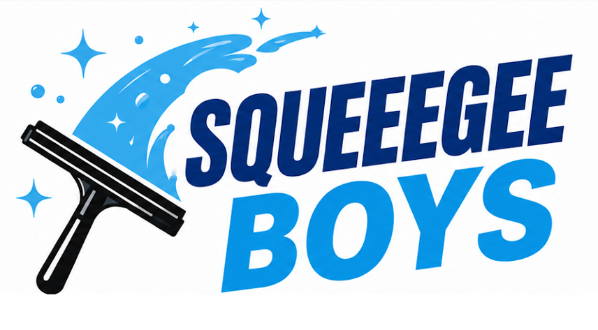
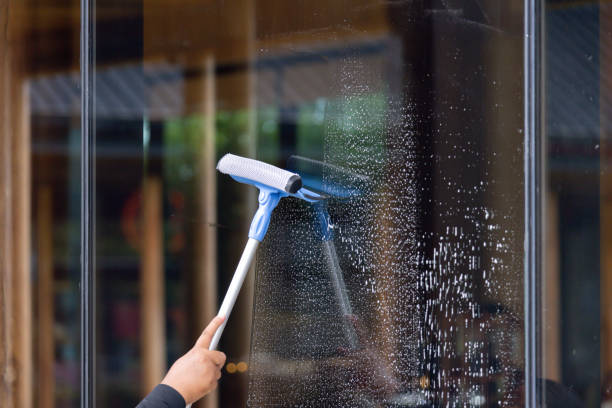
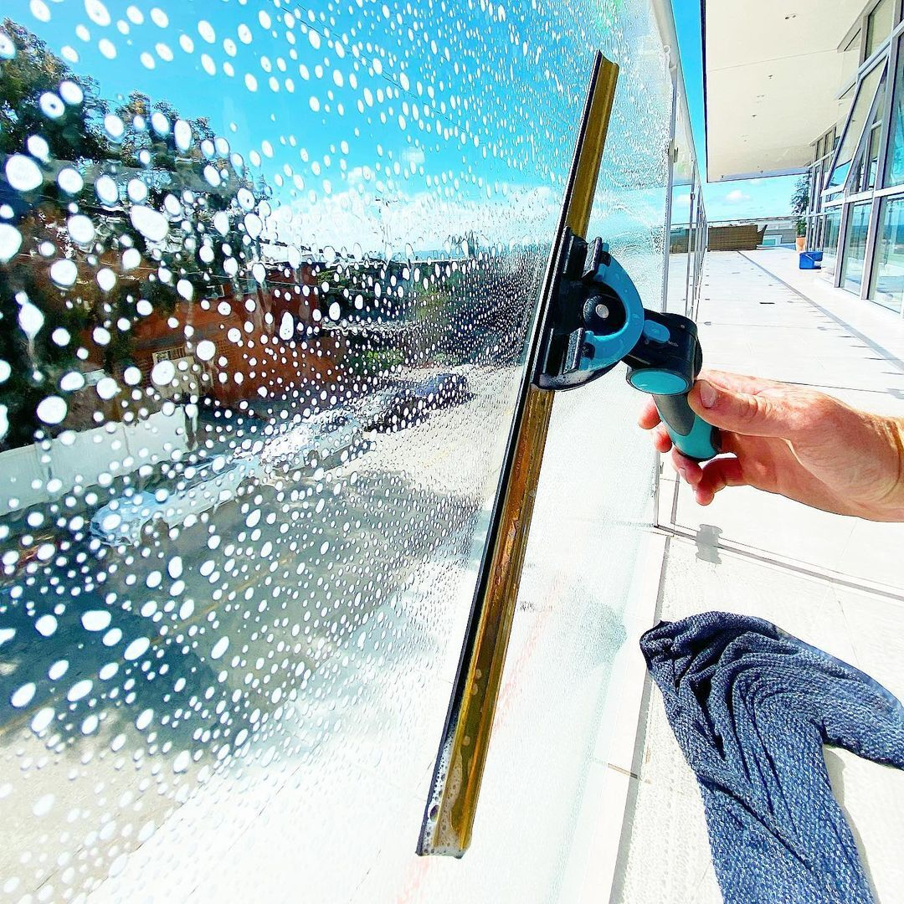
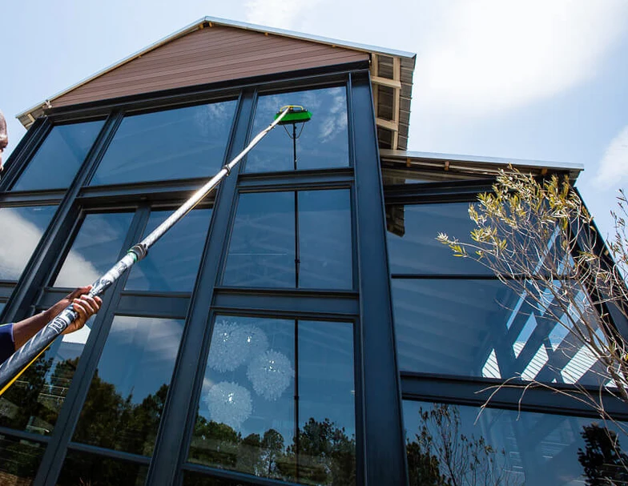

Customer Name
Customer review here
★★★★★


Professional window washing for your home, garage, office, or anywhere else!
Contact Us Now ❯

- About Us
Locally owned and operated in Cowley, WY, Squeegee Boys is a business with deep roots in the community. After years of washing windows in the summer during high school, Collin Haslem and Carsyn Weber decided to make Squeegee Boys official. Today, Carsyn and Collin serve the community by delivering quality window washing and customer-focused service.
Get a Free Quote ❯Customer review here
Customer review here
Customer review here